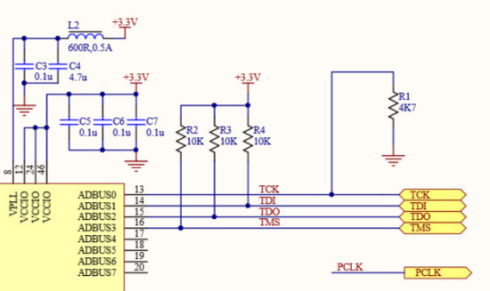
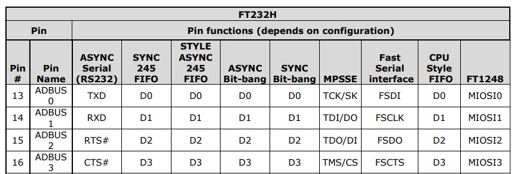
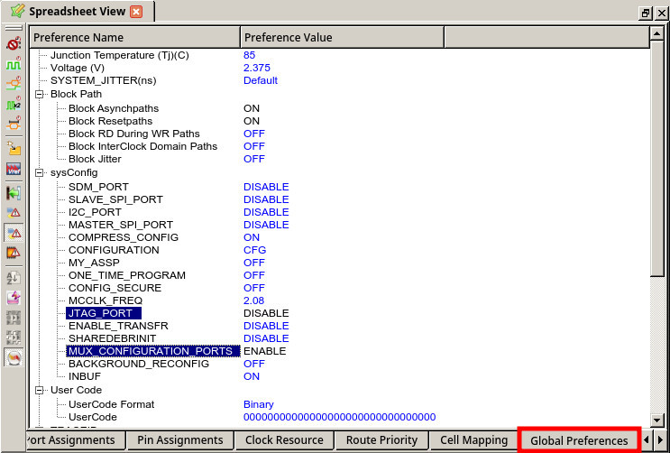
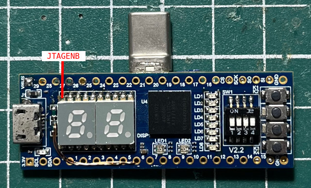
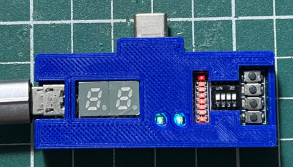

參考資訊：
https://ftdichip.com/wp-content/uploads/2024/09/DS_FT232H.pdf
https://wiki.stepfpga.com/uart%E4%B8%B2%E5%8F%A3%E6%A8%A1%E5%9D%97
JTAG腳位




module uart_bus
#( parameter bps_para = 1250 )
(
input clk_in,
input rst_in,
input rs232_rx,
output rs232_tx
);
wire bps_en_rx;
wire bps_clk_rx;
wire [7:0] rx_data;
baud
#( .bps_para (bps_para) )
baud_rx
(
.clk_in (clk_in),
.rst_in (rst_in),
.bps_en (bps_en_rx),
.bps_clk (bps_clk_rx)
);
uart_rx uart_rx_uut
(
.clk_in (clk_in),
.rst_in (rst_in),
.bps_en (bps_en_rx),
.bps_clk (bps_clk_rx),
.rs232_rx (rs232_rx),
.rx_data (rx_data)
);
wire bps_en_tx;
wire bps_clk_tx;
baud
#( .bps_para (bps_para))
baud_tx
(
.clk_in (clk_in),
.rst_in (rst_in),
.bps_en (bps_en_tx),
.bps_clk (bps_clk_tx)
);
uart_tx uart_tx_uut
(
.clk_in (clk_in),
.rst_in (rst_in),
.bps_en (bps_en_tx),
.bps_clk (bps_clk_tx),
.rx_bps_en (bps_en_rx),
.tx_data (rx_data),
.rs232_tx (rs232_tx)
);
endmodule
module baud
#( parameter bps_para = 1250 )
(
input clk_in,
input rst_in,
input bps_en,
output reg bps_clk
);
reg [12:0] cnt;
always @ (posedge clk_in or negedge rst_in)
begin
if (!rst_in)
cnt <= 1'b0;
else if ((cnt >= (bps_para - 1)) || (!bps_en))
cnt <= 1'b0;
else
cnt <= cnt + 1'b1;
end
always @ (posedge clk_in or negedge rst_in)
begin
if (!rst_in)
bps_clk <= 1'b0;
else if (cnt == (bps_para >> 1))
bps_clk <= 1'b1;
else
bps_clk <= 1'b0;
end
endmodule
module uart_rx
(
input clk_in,
input rst_in,
output reg bps_en,
input bps_clk,
input rs232_rx,
output reg [7:0] rx_data
);
reg rs232_rx0;
reg rs232_rx1;
reg rs232_rx2;
always @ (posedge clk_in or negedge rst_in)
begin
if (!rst_in) begin
rs232_rx0 <= 1'b0;
rs232_rx1 <= 1'b0;
rs232_rx2 <= 1'b0;
end else begin
rs232_rx0 <= rs232_rx;
rs232_rx1 <= rs232_rx0;
rs232_rx2 <= rs232_rx1;
end
end
wire neg_rs232_rx = rs232_rx2 & rs232_rx1 & (~rs232_rx0) & (~rs232_rx);
reg [3:0] num;
always @ (posedge clk_in or negedge rst_in)
begin
if (!rst_in)
bps_en <= 1'b0;
else if (neg_rs232_rx && (!bps_en))
bps_en <= 1'b1;
else if (num == 4'd9)
bps_en <= 1'b0;
end
reg [7:0] rx_data_r;
always @ (posedge clk_in or negedge rst_in)
begin
if (!rst_in) begin
num <= 4'd0;
rx_data <= 8'd0;
rx_data_r <= 8'd0;
end else if (bps_en) begin
if (bps_clk) begin
num <= (num + 1'b1);
if (num <= 4'd8)
rx_data_r[num-1] <= rs232_rx;
end else if (num == 4'd9) begin
num <= 4'd0;
rx_data <= rx_data_r;
end
end
end
endmodule
module uart_tx
(
input clk_in,
input rst_in,
output reg bps_en,
input bps_clk,
input rx_bps_en,
input [7:0] tx_data,
output reg rs232_tx
);
reg rx_bps_en_r;
always @ (posedge clk_in or negedge rst_in)
begin
if (!rst_in)
rx_bps_en_r <= 1'b0;
else
rx_bps_en_r <= rx_bps_en;
end
wire neg_rx_bps_en = rx_bps_en_r & (~rx_bps_en);
reg [3:0] num;
reg [9:0] tx_data_r;
always @ (posedge clk_in or negedge rst_in)
begin
if (!rst_in) begin
bps_en <= 1'b0;
tx_data_r <= 8'd0;
end else if (neg_rx_bps_en) begin
bps_en <= 1'b1;
tx_data_r <= {1'b1, tx_data, 1'b0};
end else if (num == 4'd10) begin
bps_en <= 1'b0;
end
end
always @ (posedge clk_in or negedge rst_in)
begin
if (!rst_in) begin
num <= 1'b0;
rs232_tx <= 1'b1;
end else if (bps_en) begin
if (bps_clk) begin
num <= num + 1'b1;
rs232_tx <= tx_data_r[num];
end else if (num >= 4'd10)
num <= 4'd0;
end
end
endmodule
main.lpf
LOCATE COMP "clk_in" SITE "C1"; LOCATE COMP "rst_in" SITE "L14"; LOCATE COMP "rs232_tx" SITE "B4"; LOCATE COMP "rs232_rx" SITE "B6";
連接USB就可以做UART Loopback測試(Baudrate 9600bps)
